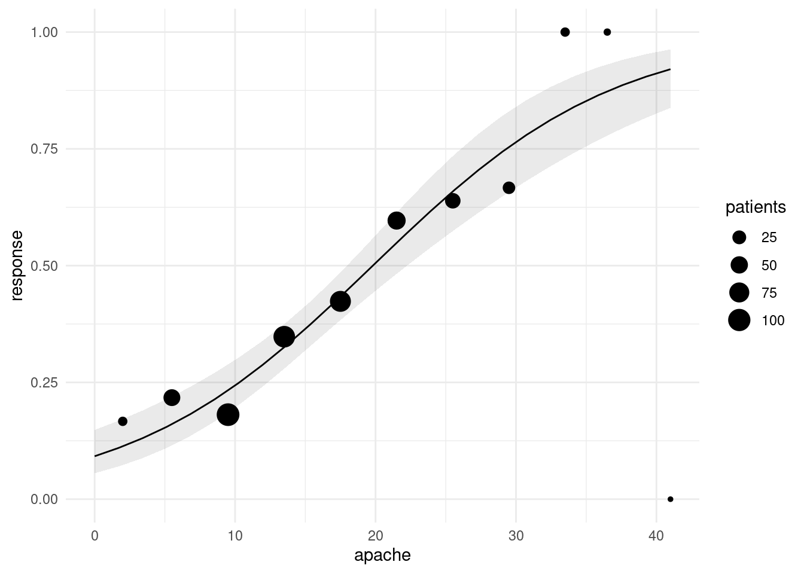
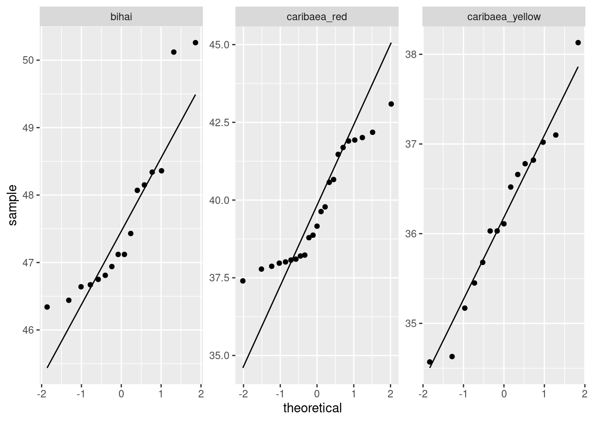

Chapter 16 A comparison of four shampoos in treating dandruff
16.1 Introduction
Shampoos are often claimed to be effective at treating dandruff. In a study, the dandruff-treating properties of four shampoos were compared. These four shampoos were, as referred to in the dataset:
PyrI: 1% pyrithione zinc shampooPyrII: asPyrIbut with instructions to shampoo two times at each wash.2Keto: 2% ketoconazole shampooPlacebo: a placebo shampoo
Each of the experimental subjects was randomly given one of the shampoos. After using their shampoo for six weeks, eight sections of the subject’s scalp were examined for each subject. Each section of the scalp was given a score that measured the amount of flaking on a scale of 0-10. The response variable, called Flaking, was the sum of these eight scores, and is a whole number for each subject. A smaller value of Flaking indicates less dandruff.3
Our aim is to see which shampoo or shampoos are most effective at treating dandruff, that is, have the smallest value of Flaking on average.
16.2 Exploratory analysis
We begin by reading in the data:
##
## ── Column specification ────────────────────────────────────────────────────────────────────────────────────────────────────────────────────────────────────────────────────────────────────────────────────────────────────────────────────────────────────────────────────────────────────────────────────────────────────────────────────────────────────────────────────────────────────────────────────────────────────
## cols(
## OBS = col_double(),
## Treatment = col_character(),
## GroupNum = col_double(),
## Flaking = col_double()
## )355 subjects took part in the study altogether. The shampoo used is indicated in the Treatment column. The remaining columns OBS and GroupNum will not be used in this analysis.
Numerical summaries of the data are as shown:
There are approximately 100 observations in each group, apart from the Placebo group, which had only 28. The mean number of flakes is much higher for the Placebo group than for the others, which seem similar. The group standard deviations are fairly similar.
With a categorical Treatment and a quantitative Flakes, a suitable graph is a side-by-side boxplot:
 Once again, we see that the flaking for the Placebo shampoo is much higher than for the others. There are outliers in the
Once again, we see that the flaking for the Placebo shampoo is much higher than for the others. There are outliers in the PyrI group, but given that the data values are all whole numbers, they are not far different from the rest of the data. Considering these outliers, the spreads of the groups all look fairly similar and the distributions appear more or less symmetric.4
16.3 Analysis of Variance
For comparing four groups, we need some kind of analysis of variance. Having seen that the Flaking values within the four groups are more or less normal with more or less equal spreads, we run a standard ANOVA:
## Df Sum Sq Mean Sq F value Pr(>F)
## Treatment 3 4151 1383.8 967.8 <2e-16 ***
## Residuals 351 502 1.4
## ---
## Signif. codes: 0 '***' 0.001 '**' 0.01 '*' 0.05 '.' 0.1 ' ' 1With an extremely small P-value, we conclude that the four shampoos do not all have the same mean value of Flaking.
To find out which ones are different from which, we use Tukey’s method:
## Tukey multiple comparisons of means
## 95% family-wise confidence level
##
## Fit: aov(formula = Flaking ~ Treatment, data = dandruff)
##
## $Treatment
## diff lwr upr p adj
## Placebo-Keto 13.3645553 12.7086918 14.0204187 0.0000000
## PyrI-Keto 1.3645553 0.9462828 1.7828278 0.0000000
## PyrII-Keto 1.1735330 0.7524710 1.5945950 0.0000000
## PyrI-Placebo -12.0000000 -12.6521823 -11.3478177 0.0000000
## PyrII-Placebo -12.1910223 -12.8449971 -11.5370475 0.0000000
## PyrII-PyrI -0.1910223 -0.6063270 0.2242825 0.6352706All of the shampoo treatments are significantly different from each other except for the two pyrithione ones. To see which shampoos are best and worst, we remind ourselves of the treatment means:
The placebo shampoo has significantly more flaking than all the others, and the ketoconazole5 shampoo has significantly less flaking than all the others. From this analysis, therefore, we would recommend the ketoconazole shampoo over all the others.
16.4 Assessment of Assumptions
The analysis of variance done above requires that the observations within each treatment group (shampoo) be approximately normally distributed, given the sample sizes, with approximately equal spreads. To assess this, we look at normal quantile plots6 for each shampoo:7
ggplot(dandruff, aes(sample=Flaking)) + stat_qq() + stat_qq_line() +
facet_wrap(~Treatment, scales = "free")
Given that the data are whole numbers, the distributions each appear close to the lines, indicating that the distributions are close to normal in shape.8 The distribution of the PyrI values is slightly long-tailed, but with over 100 observations in that group, this shape is not enough to invalidate the normality assumption.9
Having concluded that the normality is sufficient, we need to assess the equality of spreads. Referring back to our summary table:
we note that the spreads are not greatly different, and so the equal-spread assumption appears to be satisfied.10
In summary, the assumptions for the analysis of variance we did seem to be reasonably well satisfied, and we can have some confidence in our conclusions.
16.5 Conclusions
We found that the ketoconazole shampoo produced the smallest mean flaking, and its mean was significantly smaller than that of all the other shampoos. This shampoo can be recommended over the others. There was no significant difference between the two pyrithione treatments; shampooing twice had no benefit over shampooing once.
The difference in means between the ketoconazole and the two pyrithione shampoos was only about 1.2. This difference was significant because of the large sample sizes, but it is a separate question as to whether a difference of this size is of practical importance. If it is not, any of the shampoos except for the placebo can be recommended.
16.6 End
That is the end of my report. You, of course, don’t need the word “end” or any of the footnotes I had. These were to draw your attention to other things that don’t necessarily belong in the report, but I would like you to be aware of them. When you reach the end of your report, you can just stop.11
Some extra, bigger, thoughts (there are quite a few of these. I hope I don’t repeat things I also say in the “sidenotes”):
Extra 1: The placebo group is much smaller than the others, but all the groups are pretty big by ANOVA standards. Apparently what happened is that originally the three “real” treatments had 112 subjects each, but the placebo had 28 (ie., a quarter of the subjects that the other groups had), and a few subjects dropped out. There’s no problem, in one-way ANOVAs of this kind, with having groups of unequal sizes; the \(F\)-test is fine, and as long as you use a suitable extension of Tukey that deals with unequal sample sizes, you are OK there too. TukeyHSD, according to the help file, “incorporates an adjustment for sample size that produces sensible intervals for mildly unbalanced designs”. In this case, we might be holding our breath a bit, depending on what “mildly unbalanced” actually means. Usually in this kind of study, you have the groups about the same size, because proving that the smallest group differs from any of the others is more difficult. I guess these researchers were pretty confident that the placebo shampoo would be clearly worse than the others! (Additional: TukeyHSD uses the so-called Tukey-Kramer test when sample sizes within groups are unequal. My understanding is that this is good no matter what the sample sizes are.)
Extra 2: The mean for Placebo is quite a lot bigger than for the other groups, so a plot with different scales for each facet is best.
Otherwise you get this kind of thing, which is much harder to read:

The points fill less than half their facets, which makes the plots harder to understand. This also makes it look as if the distributions are more normal, because the vertical scale has been compressed. Having a better basis for assessing the normality is a good idea, given that the purpose of the plot is assessing the normality! Hence, using scales = "free" is best.
Extra 3: You might have been wondering why the boxplots, which are the usual thing in these circumstances, look worse than the normal quantile plots.
Let’s revisit them and see what happened:

The Placebo group has the largest IQR, and the PyrI group appears to have two outliers. We need to bear in mind, though, that the data values are whole numbers and there might be repeats; also, what looks like an outlier here might not look quite so much like one when we see all the data.
What you can do is to add a geom_point on to the plot to plot the observations as points:

But there are a lot more data points than this! What happened is that a point at, say, 20 is all the observations in that group that were 20, of which there might be a lot,
but we cannot see how many, because they are printed on top of each other. To see all the observations, we can jitter them: that is, plot them all not in the same place. In this case, we have the whole width of the boxplot boxes to use; we could also jitter vertically, but I decided not to do that here. There is a geom_jitter that does exactly this:12

The plot is rather messy,13 but now you see everything. The height=0 means not to do any vertical jittering: just spread the points left and right.14 Where the points are exactly on the \(x\)-scale is now irrelevant; this is just a device to spread the points out so that you can see them all.
I left the vertical alone so that you can still see the actual data values. Even though the highest and lowest values in PyrI were shown as outliers on the original boxplot, you can see that they are really not. When the data values are discrete (separated) like this, an apparent outlier may be only one bigger or smaller than the next value, and thus not really an outlier at all.
To try the vertical jittering too, use the defaults on geom_jitter:

This maybe spreads the points out better, so you can be more certain that you’re seeing them all, but you lose the clear picture of the data values being whole numbers.
When Tukey popularized the boxplot, his idea was that it would be drawn by hand with relatively small samples, and when you draw boxplots for large samples, you can get an apparently large number of outliers, that are not in retrospect quite as extreme as they may look at first. This may also have happened here. Tukey, however, did not invent the boxplot; credit for that goes to Mary Eleanor Spear with her “range plot.”15
Extra 4: More discussion of normality. The assumptions for a standard ANOVA (that is to say, not a Welch ANOVA) are normally-distributed data within each treatment group, with equal spreads. What that means in practice is that you want normal enough data given the sample sizes, and approximately equal spreads. My normal quantile plots are a long way back, so let’s get them again:
ggplot(dandruff, aes(sample=Flaking)) + stat_qq() + stat_qq_line() +
facet_wrap(~Treatment, scales = "free")
The data values are all whole numbers, so we get those horizontal stripes of Flaking values that are all the same. As long as these more or less hug the line, we are all right. The PyrII values certainly do. In my top row, Keto and Placebo are not quite so good, but they have short tails compared to the normal, so there will be no problem using the means for these groups, as ANOVA does. The only one that is problematic at all is PyrI. That has slightly long tails compared to a normal. (You could, I suppose, call those highest and lowest values “outliers”, but I don’t think they are far enough away from the rest of the data to justify that.) Are these long tails a problem? That depends on how many observations we have:
dandruff %>% group_by(Treatment) %>%
summarise(n=n(), mean_flaking=mean(Flaking), sd_flaking=sd(Flaking))There are 112 of them. Easily enough to overcome those long tails. So, to my mind, normality is no problem.
Aside: you might be wondering whether you can make nicer-looking tables in your reports. There are several ways. The gt package is the most comprehensive one I know, and has links to a large number of others (at the bottom of its webpage). The simplest one I know of is kable in the knitr package. You may well have that package already installed, but you’ll need to load it, preferably at the beginning of your report:
library(knitr)
dandruff %>% group_by(Treatment) %>%
summarise(n=n(), mean_flaking=mean(Flaking), sd_flaking=sd(Flaking)) -> summary
kable(summary)| Treatment | n | mean_flaking | sd_flaking |
|---|---|---|---|
| Keto | 106 | 16.02830 | 0.9305149 |
| Placebo | 28 | 29.39286 | 1.5948827 |
| PyrI | 112 | 17.39286 | 1.1418110 |
| PyrII | 109 | 17.20183 | 1.3524999 |
End of aside.
Before I got distracted, we were talking about whether the distribution of PyrI was normal enough, given the sample size. Another way of thinking about this is to look at the bootstrapped sampling distribution of the sample mean for this group. I set the random number seed so that the results will be the same even if I run this again:
dandruff %>% filter(Treatment == "PyrI") -> pyri
tibble(sim = 1:1000) %>%
rowwise() %>%
mutate(my_sample = list(sample(pyri$Flaking, replace = TRUE))) %>%
mutate(my_mean = mean(my_sample)) %>%
ggplot(aes(sample = my_mean)) + stat_qq() + stat_qq_line()
Oh yes, no problem with the normality there. (The discreteness of the population implies that each sample mean is some number of one-hundred-and-twelfths, so that the sampling distribution is also discrete, just less discrete than the data distribution. This is the reason for the little stair-steps in the plot.) In addition, the fact that the least normal distribution is normal enough means that the other distributions must also be OK. If you wanted to be careful, you would assess the smallest Placebo group as well, though that if anything is short-tailed and so would not be a problem anyway.
The other question is whether those spreads are equal enough. The easiest way is to look back at your summary table (that I reproduced above), cast your eye down the SD column, and make a call about whether they are equal enough. The large sample sizes don’t help here, although see the end of the question for more discussion. I would call these “not grossly unequal” and call standard ANOVA good, but you are also entitled to call them different enough, and then you need to say that in your opinion we should have done a Welch ANOVA. Or, if you got your normal quantile plots before you did your ANOVA, you could actually do a Welch ANOVA.
I am not a fan of doing one test to see whether you can do another test,16 but if you really want to, you can use something like Levene’s test to test the null hypothesis that all the groups have the same variance.17 Levene’s test lives in the package car that you might have to install first:
## Warning in leveneTest.default(y = y, group = group, ...): group coerced to factor.## Levene's Test for Homogeneity of Variance (center = median)
## Df F value Pr(>F)
## group 3 6.2001 0.0004096 ***
## 351
## ---
## Signif. codes: 0 '***' 0.001 '**' 0.01 '*' 0.05 '.' 0.1 ' ' 1Equal variances are resoundingly rejected here; the samples here have variances that are less equal than they would be if the populations all had the same variances. But that is really asking the wrong question: the one that matters is “does the inequality of variances that we saw here matter when it comes to doing the ANOVA?”. With samples as big as we had, the variances could be declared unequal even if they were actually quite similar. This is another (different) angle on statistical significance (rather similar variances can be significantly different with large samples) vs. practical importance (does the fact that our sample variances are as different as they are matter to the ANOVA?). I do the Welch ANOVA in Extra 6, and you will see there whether it comes out much different than the regular ANOVA. See also Extra 7.
If your normal quantile plots looked like this:

with the same scales, you can use the slopes of the lines to judge equal spreads: either equal enough, or the Placebo line is a bit steeper than the others. If you did scales = "free", you cannot do this, because you have essentially standardized your data before making the normal quantile plots.
It is hugely important to distinguish the null hypothesis (all the means are the same) from the assumptions behind the test (how you know that the P-value obtained from testing your null hypothesis can be trusted). These are separate things, and getting them straight is a vital part of being a good statistician. You might say that this is part of somebody else knowing how they, as someone hiring a statistician, can trust you.
Extra 5: Several ways to say what you conclude from the ANOVA:
- The null hypothesis, which says that all the shampoos have the same mean amount of flaking, is rejected. (Or say it in two sentences: what the null hypothesis is, and then what you’re doing with it.)
- Not all the shampoos have the same mean amount of flaking.
- There are shampoos that differ in mean amount of flaking.
Some wrong or incomplete ways to say it:
- We reject the null hypothesis. (Meaning what, about the data?)
- we reject the null hypothesis that the means are different. (You have confused the null with the conclusion, and come out with something that is backwards.)
- the mean flaking for the treatments is different (this says that they are all different, but you don’t know that yet.)
Extra 6: You might have been wondering how Welch’s ANOVA would have played out, given that the placebo group measurements looked more variable than the others. Wonder no more:
##
## One-way analysis of means (not assuming equal variances)
##
## data: Flaking and Treatment
## F = 595.03, num df = 3.00, denom df = 105.91, p-value < 2.2e-16##
## Pairwise comparisons using Games-Howell test## data: Flaking by factor(Treatment)## Keto Placebo PyrI
## Placebo 9.2e-14 - -
## PyrI 8.7e-14 < 2e-16 -
## PyrII 2.1e-11 < 2e-16 0.67##
## P value adjustment method: none## alternative hypothesis: two.sidedThe results are almost exactly the same: the conclusions are identical, and the P-values are even pretty much the same. The place where it would make a difference is when you are close to the boundary between rejecting and not. Here, our Tukey and Games-Howell P-values were all either close to 0 or about 0.6, whichever way we did it. So it didn’t matter which one we did; you could justify using either. The regular ANOVA might have been a better choice for your report, though, because this is something your audience could reasonably be expected to have heard of. The Welch ANOVA deserves to be as well-used as the Welch two-sample \(t\)-test, but it doesn’t often appear in Statistics courses. (This course is an exception, of course!)
Extra 7: the general principle when you are not sure of the choice between two tests is to run them both. If the conclusions agree, as they do here, then it doesn’t matter which one you run. If they disagree, then it matters, and you need to think more carefully about which test is the more appropriate one. (Usually, this is the test with the fewer assumptions, but not always.)
Another way to go is to do a simulation (of the ordinary ANOVA). Generate some data that are like what you actually have, and then in your simulation see whether your \(\alpha\) is near to 0.05. Since we are talking about \(\alpha\) here, the simulated data needs to have the same mean in every group, so that the null hypothesis is true, but SDs and sample sizes like the ones in the data (and of a normal shape). Let me build up the process. Let’s start by making a dataframe that contains the sample sizes, means and SDs for the data we want to generate. The treatment names don’t matter:
sim_from <- tribble(
~trt, ~n, ~mean, ~sd,
"A", 106, 0, 0.93,
"B", 28, 0, 1.59,
"C", 112, 0, 1.14,
"D", 109, 0, 1.35
)
sim_fromStarting from here, we want to set up drawing a lot of random samples from a normal distribution with the mean and SD shown, and the sample size shown. The way I like to do it18 is to set up a list-column called sim that will index the simulations. I’m going to pretend I’m doing just three simulations, while I get my head around this, and then up it later after I have things working:
Then I unnest sim so that I have a place to draw each sample:
Now, working rowwise, I can draw a random sample from each normal distribution. The inputs to rnorm are the sample size, the mean, and the SD, in that order.19
sim_from %>%
mutate(sim = list(1:3)) %>%
unnest(sim) %>%
rowwise() %>%
mutate(y = list(rnorm(n, mean, sd)))This is looking similar in procedure to a bootstrap sampling distribution. If we were doing that, we would now make a new column containing something like the mean of each of those samples (and then make a picture of what we had). But this is different: we want to combine all of the random samples for each of the four treatments for one of the simulations, run an ANOVA on it, and get hold of the P-value. So we need to unnest those samples, and then combine them together properly. That goes something like this:
sim_from %>%
mutate(sim = list(1:3)) %>%
unnest(sim) %>%
rowwise() %>%
mutate(y = list(rnorm(n, mean, sd))) %>%
unnest(y) %>%
nest_by(sim)What this has done is to create three mini-dataframes in the list-column data that have our generated random y and a column called treatment. What we want to do is to run the ordinary ANOVA on each of those dataframes in data, and, in a minute, get hold of the P-value. I think I need another rowwise first, because I want to work with the rows of the new dataframe:
sim_from %>%
mutate(sim = list(1:3)) %>%
unnest(sim) %>%
rowwise() %>%
mutate(y = list(rnorm(n, mean, sd))) %>%
unnest(y) %>%
nest_by(sim) %>%
rowwise() %>%
mutate(my_anova = list(aov(y ~ trt, data = data)))I know the P-value is in there somewhere, but I can’t remember how to get hold of it. The easiest way is to load broom and pass the models into tidy, then take a look at that:
sim_from %>%
mutate(sim = list(1:3)) %>%
unnest(sim) %>%
rowwise() %>%
mutate(y = list(rnorm(n, mean, sd))) %>%
unnest(y) %>%
nest_by(sim) %>%
rowwise() %>%
mutate(my_anova = list(aov(y ~ trt, data = data))) %>%
mutate(my_tidy = list(tidy(my_anova))) %>%
unnest(my_tidy)Almost there. The rows that have P-values in them are the ones that have trt (the explanatory variable) in the term, so:
sim_from %>%
mutate(sim = list(1:3)) %>%
unnest(sim) %>%
rowwise() %>%
mutate(y = list(rnorm(n, mean, sd))) %>%
unnest(y) %>%
nest_by(sim) %>%
rowwise() %>%
mutate(my_anova = list(aov(y ~ trt, data = data))) %>%
mutate(my_tidy = list(tidy(my_anova))) %>%
unnest(my_tidy) %>%
filter(term == "trt") %>%
select(sim, p.value)Three simulated samples, each time one from each of the four treatments, and three P-values. So this works, and the remaining thing is to change the number of simulations from 3 to 1000 and run it again, saving the result:
sim_from %>%
mutate(sim = list(1:1000)) %>%
unnest(sim) %>%
rowwise() %>%
mutate(y = list(rnorm(n, mean, sd))) %>%
unnest(y) %>%
nest_by(sim) %>%
rowwise() %>%
mutate(my_anova = list(aov(y ~ trt, data = data))) %>%
mutate(my_tidy = list(tidy(my_anova))) %>%
unnest(my_tidy) %>%
filter(term == "trt") %>%
select(sim, p.value) -> sim_pval
sim_pvalNow, the reason we were doing this was to see whether regular ANOVA worked properly on data from populations with different SDs. We know that the null hypothesis is true here (because all the true treatment means were equal to 0), so the probability of making a type I error by rejecting the null (that all the means are the same) should be 0.05. How close is it?
\(91/1000 = 0.091\). We are too likely to falsely reject the null. The regular ANOVA does not behave properly for data like ours.
That looks rather high. Is the proportion of times I am rejecting significantly different from 0.05? Testing null hypotheses about (single) proportions is done using prop.test. This uses the normal approximation to the binomial, with continuity correction:
##
## 1-sample proportions test with continuity correction
##
## data: 91 out of 1000, null probability 0.05
## X-squared = 34.532, df = 1, p-value = 4.194e-09
## alternative hypothesis: true p is not equal to 0.05
## 95 percent confidence interval:
## 0.07425035 0.11096724
## sample estimates:
## p
## 0.091Ah, now, that’s interesting. A supposed \(\alpha = 0.05\) test is actually rejecting around 9% of the time, which is significantly different from 0.05. This surprises me. So the ANOVA is actually not all that accurate.20
So now let’s do the same simulation for the Welch ANOVA to see whether it’s better:
sim_from %>%
mutate(sim = list(1:1000)) %>%
unnest(sim) %>%
rowwise() %>%
mutate(y = list(rnorm(n, mean, sd))) %>%
unnest(y) %>%
nest_by(sim) %>%
rowwise() %>%
mutate(my_anova = list(oneway.test(y ~ trt, data = data))) %>%
mutate(pval = my_anova$p.value) -> sim_pval2
sim_pval2This one is a bit easier because oneway.test has a thing called p.value that you can just pull out. No need to use tidy here.
How many of those P-values are less than 0.05?
That couldn’t be much closer to the mark:
##
## 1-sample proportions test with continuity correction
##
## data: 49 out of 1000, null probability 0.05
## X-squared = 0.0052632, df = 1, p-value = 0.9422
## alternative hypothesis: true p is not equal to 0.05
## 95 percent confidence interval:
## 0.03682698 0.06475244
## sample estimates:
## p
## 0.049This one is on the money.21 The proportion of times our simulation falsely rejects is not significantly different from 0.05. So this investigation says that the Welch ANOVA is much more trustworthy for data resembling what we observed.
\(\blacksquare\)
The piece in the problem statement about why these two labels were used is clarification for you and doesn’t belong in the report. If you leave it in, you need to at least paraphrase it; simply copying it without having a reason to do so shows that you are not thinking.↩︎
I’m using a fair few of my own words from the question. This is OK if you think they are clear, but the aim is to write a report that sounds like you rather than me.↩︎
Offer supported opinions of your own here, which don’t need to be the same as mine. Alternatively, you can get the graph and numerical summaries first and comment on them both at once.↩︎
Use the full name of the shampoo if you are making a conclusion about it.↩︎
I’ve used
scales = "free"to get the plots to fill their boxes, for the best assessment of normality. The downside of doing it this way is that you cannot use the slopes of the lines to compare spreads. I think this way is still better, though, because the mean for placebo is so much bigger than the others that if you use the same scale for each plot, you’ll be wasting a lot of plot real estate that you could use to get a better picture of the normality.↩︎It’s also good, arguably clearer, to use this as your exploratory plot. This enables you to get to a discussion about normality earlier and you might decide in that case that you don’t even need this discussion. You can do the assessment of assumptions first, and then do the corresponding analysis, or you can pick an apparently reasonable analysis and then critique it afterwards. Either way is logical here. In other cases it might be different; for example, in a regression, you might need to fit a model first and improve it after, since it may not be so clear what a good model might be off the top.↩︎
This is a way to write it if you suspect your reader won’t remember what a normal quantile plot is, and by writing it this way you won’t insult their intelligence if they remember after all. The other side benefit of writing it this way is that it shows understanding as well.↩︎
If you have any doubts about sufficient normality, you need to make sure you have also considered the relevant sample size, but if you are already happy with the normality, there is no need. The placebo group, for example, is the smallest, but its shape is if anything short-tailed, so its non-normality will be no problem no matter how small the sample is.↩︎
I’d rather assess equality of spreads by eyeballing them than by doing a test, but if you really want to, you could use Levene’s test, illustrated elsewhere in PASIAS and in Extra 4 for these data. It works for any number of groups, not just two.↩︎
I wanted to make it clear where my report ended and where the additional chat began.↩︎
I explain the below the plot.↩︎
It looks to me as if the boxplot has been attacked by mosquitoes.↩︎
The default jittering is up to a maximum of not quite halfway to the next value. Here that means that each observation is nearest to the box it belongs with.↩︎
I learned this today.↩︎
Because the true alpha for the combined procedure in which the test you do second depends on the result of the first test is no longer 0.05; you need to think about what that true alpha is. It might not be too bad here, because regular ANOVA and Welch ANOVA tend to come out similar unless the sample variances are very different, in the same way that the Welch and pooled two-sample tests do. But it is not something to take for granted.↩︎
There are other tests you could use here. I like Levene’s test because it works best when the samples are not normal, but the normality is OK here, so this is not so much of an issue. Of course, the time you want to be assessing equality of variances is when you have already seen sufficient normality, but that might have been because the samples were large rather than that they were especially normal in shape themselves.↩︎
At this moment, subject to change, etc etc.↩︎
Or you can remember or look up the names to the inputs, and then you can have them in any order you like. But I know which order they come, which is good enough for me.↩︎
When you get a simulation result that is not what you were expecting, there are two options to explore: either it really is different from your expectation, or there is something wrong with your code. I think my code is OK here, but do let me know if you see a problem with it.↩︎
You could redo this with 10,000 simulations to convince yourself further.↩︎